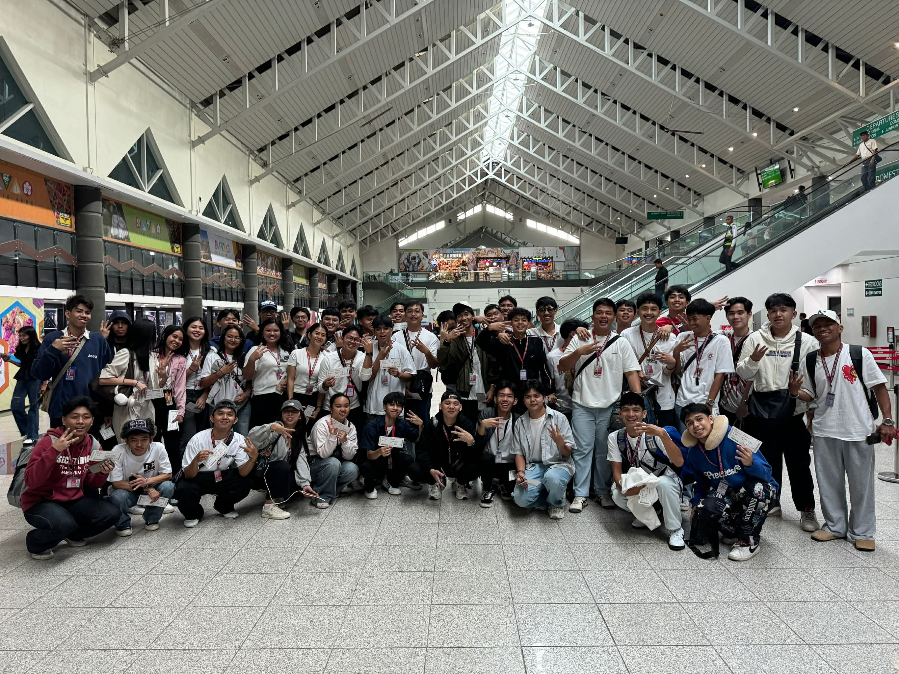
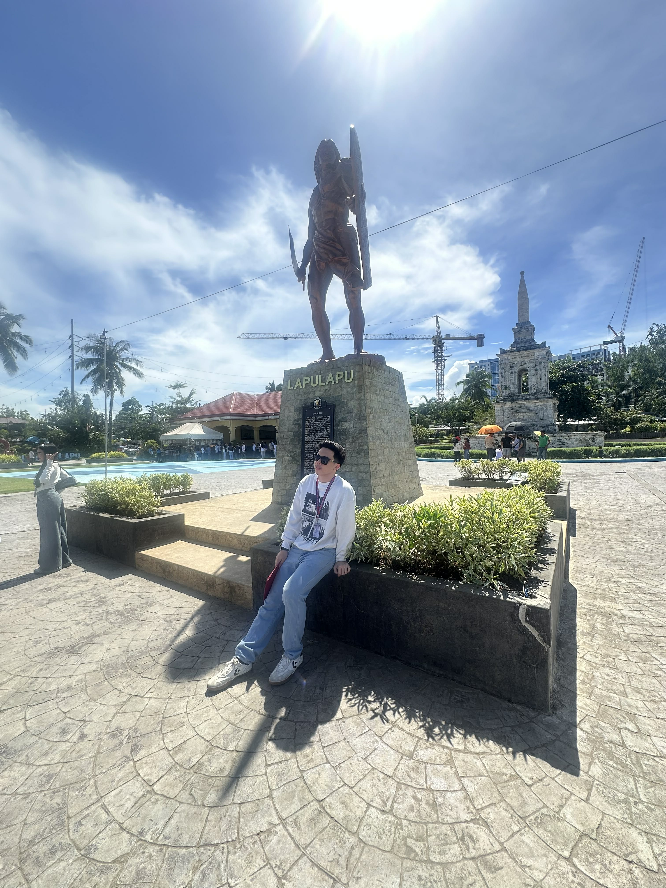
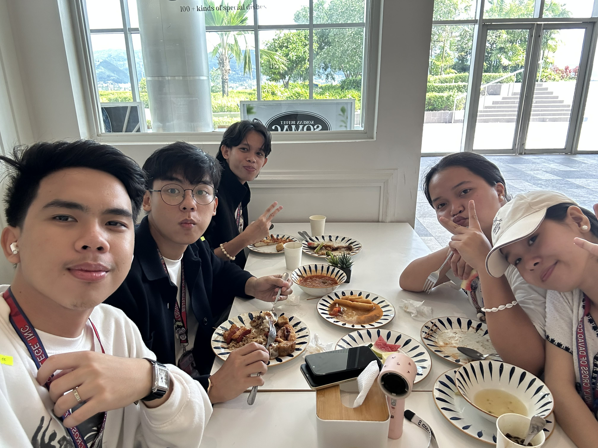
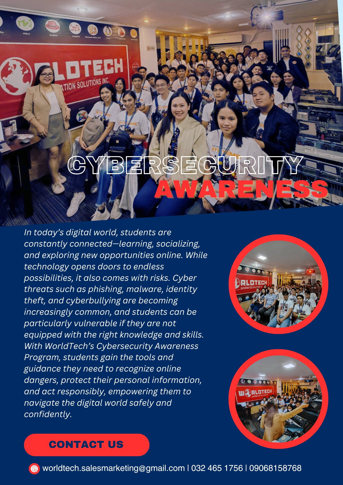
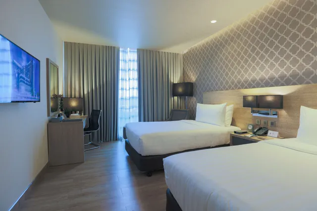

Hello, Cebu City!
We all met early at the Davao Airport for our big trip to Cebu!
Learning at Lapu-Lapu
The Mactan Shrine in Lapu-Lapu City, Cebu was established in 1969. The site is believed to be the approximate location of the historic Battle of Mactan.
Lunch at SM Seaside
We enjoyed a Korean lunch at Somac Korean Restaurant also First and the biggest Korean buffet in Cebu!
Industry Visit: WORLDTECH
Worldtech Information Solutions Inc. is an IT consultancy company and certification training center base in the Asia Pacific Region.
Accommodation
Nestled between the bustling cities of Mandaue and Cebu, bai Hotel Cebu presents spectacular harbor and city views.
